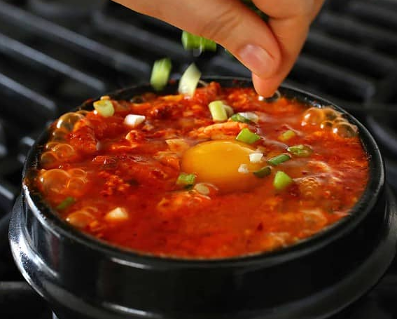

Spicy soft tofu stew with kimchi and pork belly
Home

Top the finished dish with some green onions and a raw egg to mix it with the hot stew.
It’s about time for some sizzling, comforting stew, isn’t it? How about sundubu-jjigae?
It’s hot, spicy, filling, comforting, delicious, soft tofu stew and has many reasons
to be one of the most popular items in Korean restaurants.
This recipe serves 1 or two people, but you can double or triple the recipe for more people,
and use a large stainless steel or cast iron pot for the cooking. If you want to serve
everyone in a ttukbaegi then you’ll need to cook them on multiple burners, just like a restaurant!
Ingredients
- 8 large dried anchovies, heads and guts removed
- 5 ounces of radish, peeled, washed, and sliced thinly
- dried kelp (6 x 4 inch piece)
- 2 tablespoons Korean hot pepper flakes (gochugaru)
- 1 teaspoon toasted sesame oil
- 1 teaspoon vegetable oil
- 1/2 cup pork belly (or any cut of pork: 2.5 ounces), cut into small pieces
- 1/4 cup chopped onion
- 1 clove minced garlic
- 1 green onion, chopped
- 1/2 cup well-fermented kimchi (4 ounces), chopped
- 1 teaspoon kosher salt
- 1/2 teaspoon sugar
- 1 tube of soft tofu (sundubu)
- 1 egg
Steps
Make anchovy kelp stock (myeolchi dasima yuksu)
- Put dried anchovies, radish, dried kelp, and 4 cups of water in a pot.
Cover and boil over medium high heat for 10 minutes until it starts boiling.
- Reduce the heat to low and boil another 20 minutes.
- Remove from the heat and strain. It will make about 2 cups of stock.
Make the spicy paste
- Combine the hot pepper flakes and the sesame oil in a small bowl and mix well.
Put it all together
- Heat up a 3 cup earthenware pot (ttukbaegi) on the stove over medium high heat
for about 3 to 4 minutes. If you use a small heavy pan or pot, it will take less.
- Add the vegetable oil, onion, and garlic. Stir it with a wooden spoon for 1 minute.
- Add the pork. Stir for 3 minutes until the pork is no longer pink.
- Add kimchi and keep stirring for a minute. Add ½ cup anchovy stock.
Cover and cook for 7 minutes over medium heat.
- Add the salt and the sugar and mix well.
- Cut the tube of soft tofu into half and squeeze it out into the pot. Gently break
up the tofu with a wooden spoon. If you want, add a few tablespoons of stock.
- Put the hot pepper mixture on top and spread it with the spoon.
- Crack the egg and put it on top, in the center of the stew.
Let it bubble and sizzle for 1 minute.
Serve
- Sprinkle with the chopped green onion and serve with rice and a few more side dishes.